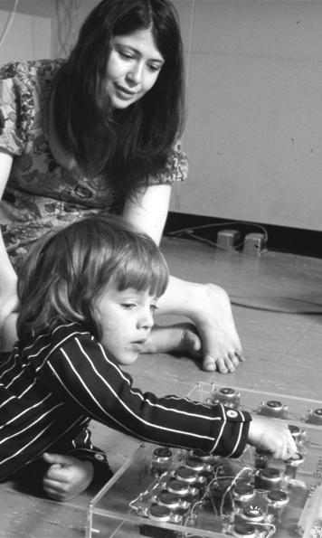
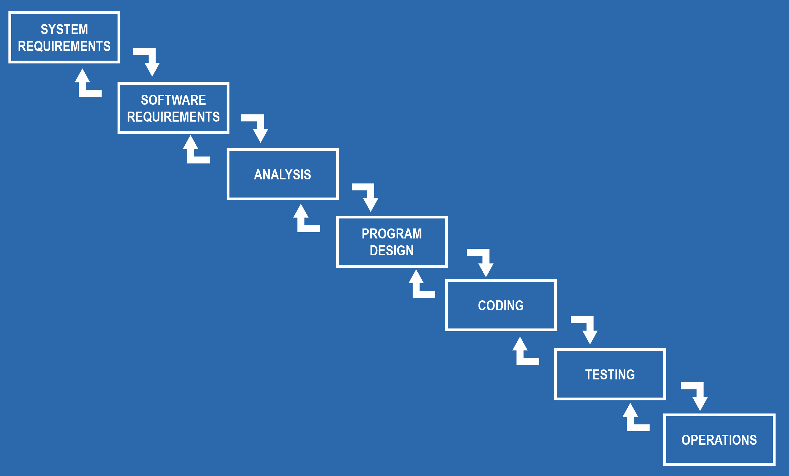
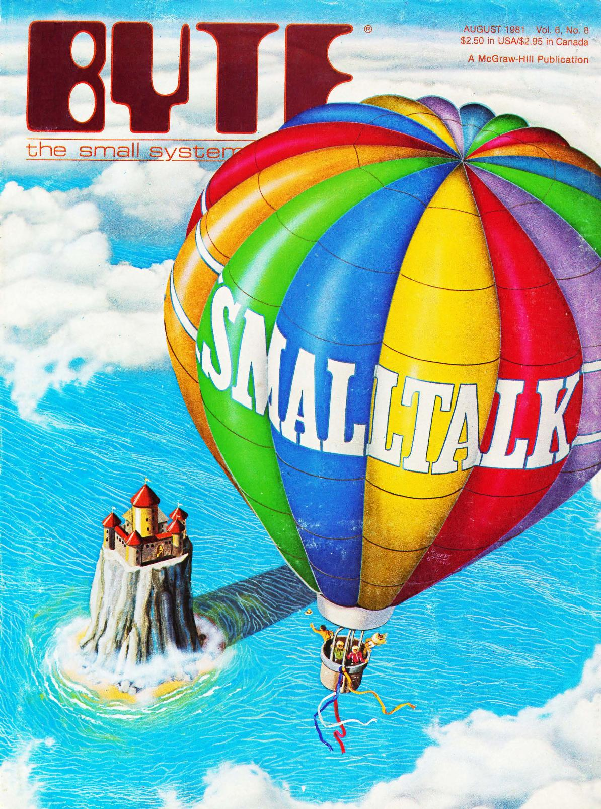

Cultures of Programming
The Development of Programming
Concepts and Methodologies
Tomas Petricek, Charles University, Prague


What is a correct program? What education makes a good programmer?
History of programming as interactions between five cultures
of programming.
Cultures
The five cultures of programming
Managerial
Hacker
Humanistic

Mathematical
Engineering
float Q_rsqrt( float number )
{
long i;
float x2, y;
const float threehalfs = 1.5F;
x2 = number * 0.5F;
y = number;
// evil floating point bit level hacking
i = * ( long * ) &y;
// what the fuck?
i = 0x5f3759df - ( i >> 1 );
y = * ( float * ) &i;
// 1st iteration
y = y * ( threehalfs - ( x2 * y * y ) );
// 2nd iteration, this can be removed
// y = y * ( threehalfs - ( x2 * y * y ) );
return y;
}
What code is beautiful?
Hacker culture
Values clever code that shows understanding of the machine operation
#define submerge const char*_=O%239?" ":"\t;\t";O*=2654435761;int
#define _cOb8(...) int s,on,__VA_ARGS__;int main(int O, char**Q)
_cOb8(o_, _oO8ocQOcOb, _ocQbo8oo, _oO8ocOb_
){ ; { ;;; ;;} ;{
;; ;{ ; } {;;}
} float the;; static things ;; for (;;){ us :;;
; ; break; the; ;; long grass ;unsigned squall ; }
{ } ; while (1){soft:; submerge us;; in: sleep (0) ;
; ; printf (_); quietly :on ;; the; soil:; };
{{ }; ; ; ;; ;{ ; }; {
{ ; shake: time (1) ;register *_, the =clock(s );
;} ; volatile *_, winds ; ; double wills ;{
; char the ,* fire ;; short companion,*_;}
; { union {}*_, together ;; ; void *warms ;}
} ;; ;{; ;} ; ;;
; ; if (1) wet :; raise (1); struct{}ure ;; ;
; ; free (0);for(;;){ newborn :; ; daughter :; ;
;{ ; extern al, ** world ,*re;const ructed ;};
; ; ; continue;on:;; floods :; ; of: water :;};}
; ;{ ; ; ;; { ; ; } ; } ; ; }
Beautiful code?
Humanistic culture
Use double coding to speak to the human as well as
to the machine

What code is beautiful?
Engineering culture
Simple, well-structured. Readability is valued more than cleverness.

What code is beautiful?
Mathematical culture
Code achieves great expressivity using a combination of small number of orthogonal features.

What code is beautiful?
Managerial culture
Structure of code enables appropriate organization of development teams and project management.
Collaborations
Cultures meet to give rise to shared concepts
History of types
- 1903 - Avoiding logical paradoxes (Russell)
- 1956 - Numbers in two modes (FORTRAN)
- 1957 - Data description cards (FLOW-MATIC)
- 1974 - Abstract data types (Clu)
- 1978 - Meta-language for a theorem prover (ML)
- 1989 - Types in proof assistants (Alf and Rocq)
- 2012 - Unsound type systems (TypeScript)
Types in programming
FORmula TRANslator
rather than a language
Arguments in fixed or
floating-point mode

Algorithmic Language
Types (integer, real, Boolean) denote properties of values;
Subscripts for arrays


IBM COMTRAN
Electronic versions of paper-based records
Data records with specific string formatting
Towards a universal language
Mathematical models
- Data spaces (McCarthy, '59)
- Product \(A \times B\), union \(A \oplus B\)
- Set-theoretical types (Hoare, '72)
Types in Algol 68
- A long and difficult struggle
-
Whereas ALGOL 60 has values of [three types],
ALGOL 68 features an infinity of “modes”.
From mathematics to engineering

Lambda-calculus models (Morris '69)
Models type checking via derivation rules
Types are not sets (Morris '73)
Authentication and secrecy problems
Now in Cedar system at Xerox PARC
Abstract data types (Liskov '74)
Type checking done at runtime in Clu
Cites Reynolds ("personal communication")

LCF/ML (1978)
Abstract data types
for proof terms
Data types
for convenient programming
Type checking
for proof correctness
Types
Cultural reconciliation at last...?
- Proof assistants and dependent types
- Type providers and data as types
- Modelling types as relations
- Unsound type systems for the real world
Clashes
Cultures clash and struggle for control
Object-orientation
Struggle for control over a concept
- 1960s - Mathematical simulations in Simula
- 1970s - Personal dynamic media in Smalltalk
- 1980s - From Smalltalk to C++ and Java
- 1990s - UML and new development processes

SIMULA "1"
Activity declarations
vs. processes
Remote accessing
SIMULA 67
Classes and objects
Record handling inspired by Hoare
Three cultures of Smalltalk
Humanistic (early 70s)
"Computer for Children of All Ages"
Learning and educational focus
Hacker (late 70s)
Experimentation tool at Xerox
Engineering (80s-90s)
From Tektronix to IBM Visual Age
Test-driven development, design patterns
Object-oriented methodology
How do you design
software using objects?
Objects as active actors
Responsibilities of objects

From objects to software development processes
Objects support requirements analysis, team structuring

Clashes
Disagreements and struggles for control
- What is object-oriented programming?
- Interpretation of structured programming
- Is formal verification possible?
- Interactive programming vs. applications
Conclusions
Cultures of Programming
Thanks to HAPOC & PROGRAMme!
Book comes out in January 2026 as open-access
All models are wrong, but some are useful
Framing for history & current debates
Programming is a pluralistic enterprise
Tomas Petricek, Charles University, Prague